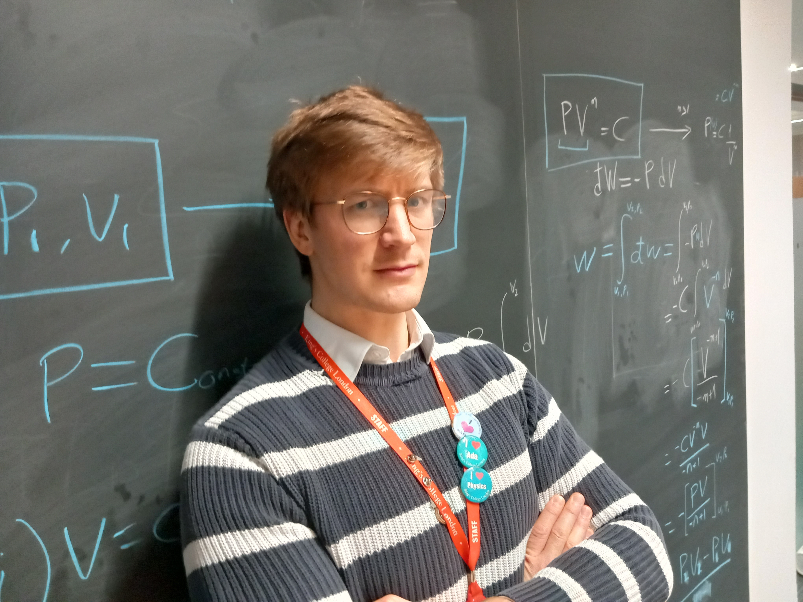

I am a theoretical computational physicist specialising in solid state physics, light-matter interactions, metallic nanoparticles, and plasmonic materials. My main research is focussed on optical polarisation singularities, and strong-field phenomena in various states of matter.